Literature Review
In this section, I will explore the literature surrounding the creation and usage of the word “transgender.” In doing so, I will also explore some of the language that preceded it, as well as some that has been created since its coinage. As I will show, all these words are interconnected and nearly impossible to disentangle.
Early Understandings of Trans* Experiences
Trans* 1 experiences have existed throughout time and cultures, although with different language and understandings of identity.2 This project will focus specifically on the language that developed starting in America and Europe in the 20th century since this is where much of the language currently associated with the word transgender started to appear.
Many words for trans* experiences were proposed and used prior to and at the beginning of the 20th century that are no longer used today. In the late 19th century, what we consider today as sexuality and gender identity were conflated, and understood with the popular theory of inversion. This theory held that people who we would now likely be labeled as gay men embody femininity, and gay women embody masculinity (Meyerowitz 2002, 14).Building off this idea of inversion, in 1910, Magnus Hirschfeld, a German sexologist, coined the word transvestite.3 He described transvestites as people with “the erotic urge for disguise” who were men that wore women’s clothing as a sort of sexual fetish (Stryker 2008, 16). It is from this history that the word transsexual arose.
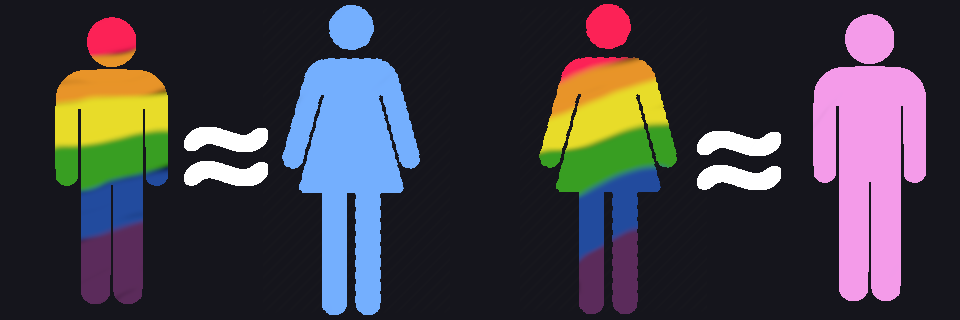
The theory of inversion
The Rise of the “Transsexual”
The word transsexual is attributed to David Caldwell’s 1949 article, Psychopathia Transexualis.4 He explains that “among both sexes are individuals who wish to be members of the sex to which they do not properly belong” and that “when an individual fails to mature according to his (or her) proper biological and sexological status, such an individual is psychologically (mentally) deficient. The psychological condition is in reality the disease” (Caldwell in Stryker & Whittle 2006, 40-41). Clearly, this early example of this word is based in medicalization and illness. Although coinage is generally attributed to Caldwell,5 usage was popularized by Harry Benjamin in his texts such as Transsexualism and Transvestism as Psycho-Somatic and Somato-Psychic Syndromes which defines a transsexual as a person who experiences an “extreme degree of transvestism” where “a transformation of sex is the foremost desire” (Benjamin in Stryker & Whittle 2006, 46).
These early understandings of the transsexual were strongly related to medicalization. For example, much of the early history of transsexuality is understood by “landmark” individuals, such as Lili Elbe, Dora Richter, and Michael Dillon, who were among the “firsts” to receive various “sex reassignment” surgeries. Most of the dialogue around transsexuality happened within medical institutions in the context of these surgeries. Early on, these surgeries were not conducted in America (where they were considered unnecessary and harmful), but by 1966 they started to be accepted as an important aspect of care (Stryker 2008, 73), in large part because of Benjamin, who argued that “the untreated transsexual patient is one of the unhappiest that any doctor can ever meet” and that surgery was important and necessary (Benjamin 1967, 428-429).
The idea of the transsexual started to have more prominence and visibility in mainstream U.S. society after Christine Jorgensen was publicized as an assigned male-at-birth female who had “changed sex.” Although not the first to receive these medical interventions, she was the first to gain mainstream attention. She made headlines, including the front-page story in the New York Daily News, “Ex-GI Becomes Blonde Beauty” (Meyerowitz 2009, 62). Jorgensen’s media presence introduced concepts of the transsexual in mainstream culture, and prompted more sexologists and other scientists to focus on people like her. In addition to a very medicalized notion of the transsexual, Jorgensen’s fame also solidified conceptions of the transsexual as a middle class, white, traditionally feminine woman who was assigned male at birth (Skidmore 2011).
 One of the first major headlines to feature Jorgensen. Front page of the New York Daily, Dec. 1, 1952
One of the first major headlines to feature Jorgensen. Front page of the New York Daily, Dec. 1, 1952
There is much to be said critiquing the medicalization of trans* bodies that began in the late 19th and throughout the 20th century, which in large part revolves around the creation of “the transsexual” in texts related to medicine and sexology. Early sexologists held assumptions of what “real” transsexuals looked like; they were understood as generally heterosexual or asexual people, who felt they were in the “wrong body” and were disgusted by their preoperative bodies (Stone 1992, 161-162). In turn, people who wanted access to these surgeries told doctors the stories they wanted to hear, in order to be believed. In “The Empire Strikes Back: A Posttranssexual Manifesto,” Sandy Stone explores this issue and explains that, “It took a surprisingly long time - several years - for the researchers to realize that the reason the candidates’ behavioral profiles matched Benjamin's so well was that the candidates, too, had read Benjamin's book” and “were only too happy to provide the behavior that led to acceptance for surgery” (Stone 1992, 161). In addition, those who did not want medical intervention or surgery were left out of the narrative and made invisible. Narratives of medicalization still have visible impacts on the experiences of trans* people today.6 These narratives were also what led a transgender activist, named Virginia Prince, to first describe herself as a transgenderist.
Virginia Prince and the Introduction of Transgender(al)
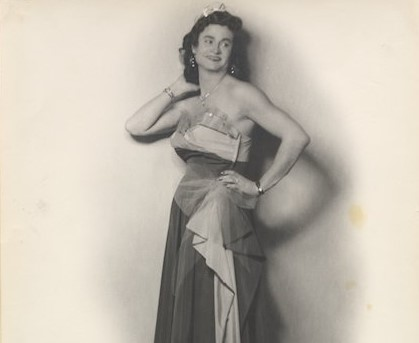
A photograph of Virginia Prince from University of Virginia (https://www.uvic.ca/transgenderarchives/collections/virgina-prince/index.php)
Virginia Prince was a transgender woman who, although using hormones, never opted to receive genital surgery. The first time she used this word in print7 is generally attributed to a piece she wrote in 1969, where she explains “I, at least, know the difference between sex and gender and have simply elected to change the latter and not the former. If a word is necessary, I should be termed a ‘transgenderal’” (Prince 1969 in Ekins & King 2004). She later replaced this word with “transgenderist” (Ekins & King 2004). Prince was acting in opposition to the medical narratives that told her that the only way she could be a true transsexual was through genital surgery. Rather than trying to fit that mold, she created a new category. She argues that it is not necessary to change one’s biological sex, which she equates heavily with genitalia, in order to change one’s gender, the way one presents in society and relates to other people (Ekins & King 2005, 5-15).
There were some major problems in Prince’s definition of a “transgenderist.” Specifically, her writings focused exclusively on transgender women.8 She was also judgmental of those who chose to have genital surgery, particularly those who were not interested in having sex with people with penises. She claimed that they were confused, and would “be just as happy and comfortable being transgenderists and saving a lot of money, a lot of pain and discomfort and the relatively high probability of further surgical experience” (Prince 2005, 45; originally published in 1979). Despite her problems, Prince not only introduced and popularized the label of “transgender” but was also an important advocate for allowing trans* people to exist outside the medical narratives that had thus far shaped the discourse.
Multiple Definitions of Transgender
Transgender does not typically mean the same thing today as it did when Prince first began using it in 1960s and 70s. In their 2006 book, The Transgender Phenomenon, Richard Ekins and Dave King explore this changing meaning and propose four definitions of “transgender” (Ekins & King 2006). The first of these is Prince’s definition, which, although currently the least popular of the four, has left an important impact. It has been used by other authors such as Jay Prosser in 1998 in Second Skins, and even in some 21st century literature, such as an article published in 2013 about court definitions and understandings of trans* people (Gonzalez-Salzberg 2013, 801).
Cropped image from David Barajas on Upsplash (https://unsplash.com/photos/oryVglc-wlg)
The second definition of transgender is the one I came into this project the most associated with, which is transgender as an umbrella term “used to describe a wide range of gender-diverse people who do not feel that the gender assigned to them at birth was correct” (Meyorwitz 2009, 345). In this sense, transgender describes the categories that Prince referred to as transsexual and transgender, as well as a multitude of other identities. One of the earliest, if not the first, example of transgender being used academically in this way is in the essay Transgender Liberation: A Movement Whose Time Has Come, by Leslie Feinberg who introduced the idea of a “transgender community” made up of “a diverse group of people who define [them]selves in many different ways” (Feinberg 1992 in Stryker & Whittle 2006, 206).
As with Prince’s definition, this understanding of transgender as an umbrella term is not without criticism. Some authors, although in the minority, have argued that the words transgender and transsexual should remain separated (Prosser 1998, 176). Others, in a different vein, have argued that the label of transgender, while attempting to cover everyone’s identities, over emphasizes the role of binary, “passing,” trans-women and erases the experiences of other trans* people. These authors argue that “umbrellas don’t work well when one group holds them up” (Nestle, Howell, & Wilchins 2002, 59).
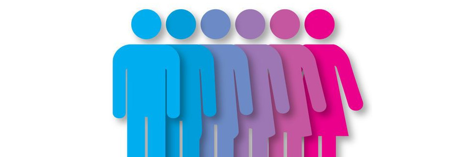
Image from HuffPost (www.huffpost.com/entry/breaking-gender-roles-the-trans-enough-project_b_58142639e4b096e8706965e8)
The third definition of “transgender” that Ekins and King explore is “Transgender as Transgression” or as transcendence (Ekins & King 2006, 14). They explain that this term “can be used in the overtly transgressive sense of ‘going beyond’ the binary divide, and, in some uses, of ‘going beyond’ gender altogether” (Ekins & King 2006, 12). This understanding of transgender is deeply rooted in gender and queer theory,9 and can also be associated with the rise of the word genderqueer, which I will briefly explore near the end of this review.
In 1991, Holly Boswell is one of the first to explicitly define transgender this way, describing it as “a viable option between crossdresser and transsexual person, which also happens to have a firm foundation in the ancient tradition of androgyny” which defies traditional gender norms while also embracing the wholistic set of trans* experiences (Boswell 1991, 29). This understanding of transgender places it as a state of in-betweenness that can question traditional understandings of gender. When transgender is defined this way, it is often associated with visibility, in opposition to passing.
The final definition of transgender that Ekins and King give is as the field of “transgender studies” which attempts to “map the various constructions of transgender phenomena in terms of their origins, developments, interrelations and consequences” (Ekins & King 2006, 19). This field focuses on understanding transgender history and current existence, and is where this project lies.
In this review so far, I have explored the rise, and variety of meanings, of the word transgender in the context of other words such as transvestite and transsexual. Before moving into my specific research, it is important to note the existence of other words that came after this rise, specifically the term genderqueer, as well as to address some of the issues in the literature that I am exploring.
Genderqueer and Nonbinary Genders
 The genderqueer flag
The genderqueer flag
As with other trans* identities, the idea of genders that fall outside of the binary are by no means new, nor are they bound to American or European culture.10 The word “genderqueer” itself arose out of much of the same literature that defined transgender as transgression. The actual coinage of this word is generally attributed11 to Riki Wilchins in 1995, when she states
It’s about all of us who are genderqueer: diesel dykes and stone butches, leatherqueens and radical fairies, nelly fags, crossdressers, intersexed, transsexuals, transvestites, transgendered, transgressively gendered, and those of us whose gender expressions are so complex they haven’t even been named yet.12
This term has continued to be explored academically13 and is now an important term to describe gender nonnormative people, as is the word nonbinary.14 The rise of these words, as well as the continuous creation of new words to describe people’s gender identities, is an example of how this language is so quickly changing.
Problems in the Literature
Finally, before launching into my specific project, I want to acknowledge that there are some major problems with the literature surrounding trans* identities. These problems may make their way into my work which, as I will explain, focuses on analyzing and exploring this very literature. To put it briefly, much of the academic work that exists, especially older works, prioritizes white, middle class, post-op, “passing” trans women, leaving many trans* people out of these narratives. In addition, this project focuses on Western, academic understandings of trans* identities, which is by no means a comprehensive lens to understand all trans* experiences.
Notes
- In this project, I will be using the word trans* to describe the range of language/identities that describe non-cisgender people, including (but not limited to) the words transgender, transsexual, genderqueer, and nonbinary. Although this word is rooted in American and European discourse, I attempt to use it to describe those with similar experiences, across culture and time, even when this word would not be directly applied.
- For example, in the book Transgender: A Reference Guide, Aaron Devor & Ardel Haefele-Thomas explore pre-twentieth century trans* experiences in the section “From the Ancients to the 1700s - Recognition of Gender Diversity”: 9-16.
- Although far less common, this word is still used today, such as in the Diagnostic Statistical Manual 5, published in 2003, which includes “Transvestic Disorder”, which is associated with the sexual fetish described by Hirschfeld, in cases where it causes significant distress to an individual.
- For example, Stryker in Transgender History, 18 makes this attribution.
- There is some debate on who actually coined this word, for example, in The Transgender Studies Reader on page 40, authors explain that it was used even earlier by Magnus Hirschfeld, albeit in a different context. However, Caldwell first published this word with the definition that gained popularity.
- For example, in 2013, Dean Spade, a trans* activist and writer, explored similar issues, including his personal experience of lying to doctors and psychologists in order to receive hormones and surgery: See Dean Spade, “Mutilating Gender” in Stryker & Whittle, The Transgender Studies Reader, 315-332
- There is some debate on who actually coined this word, for example, Dr John Oliven used the word in 1965 as a replacement for the word transsexual. However, Prince’s definition was the first to gain popularity and is the one most commonly associated with the coinage of the word. See Cristan Williams, “Transgender,” Transgender Studies Quarterly 1, no. 1 (2014): 233
- Prince, as well as other writers of her time, was rather inconsistent with what she meant when she said “transgender” or “transsexual” men or women, and often referred to the sex/gender assigned at birth. When I use these phrases in my writing, however, I am referring to one’s gender identity, not one’s gender assigned at birth.
- For example, Judith Butler’s Gender Trouble, which explores gender as performative, was an important piece in the development of this understanding.
- As an example of a non-western understanding of a genderqueer experience, the word Two-Spirit was adopted at the 1990 Third Annual Inter-Tribal Native American, First Nations, Gay and Lesbian American Conference to describe a variety of identities of gender and sexuality that fall outside of the Western binary. See Devor & Haefele-Thomas, Transgender, 8
- For example, Charlie McNabb makes this attribution on page 9 of Nonbinary Gender Identities: History, Culture, Resource.
- Found on “Genderqueer History” on genderqueerid.com, originally from Riki Wilchins, “In Your Face” Transsexual Menace, (1995).
- For example, see Nestle, Howell & Wilchins, Genderqueer: Voices from Beyond the Sexual Binary.
- There is not a specific date or person that the coining of the word “nonbinary” is attributed to, although McNabb, in Nonbinary Gender Identities: History, Culture, Resources, on page 9, attributes it as entering the lexicon in the early 2010s.
Data Analysis & Results
To begin analyzing these definitions, I put them into Voyant1 in order to do a basic analysis of the text. The image below is a word cloud that represents the words most commonly used in these definitions, once certain stop words (such as “transgender” and variations on the word “define,” and “individual” were removed).
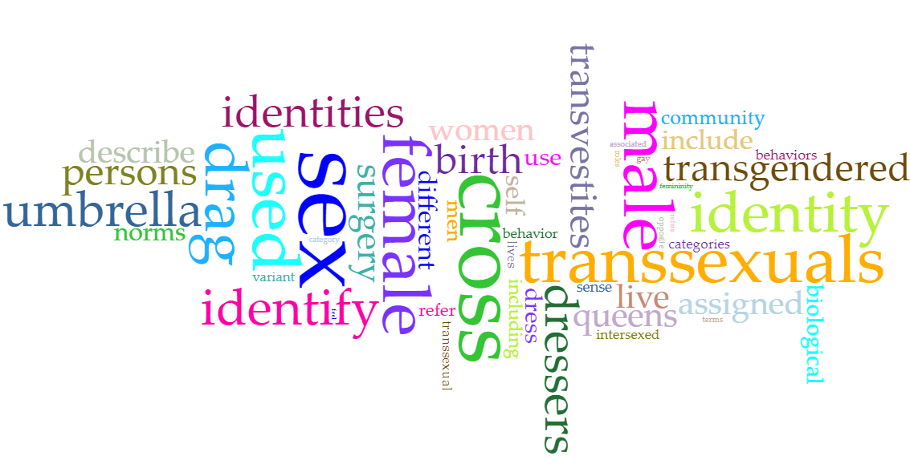
A few categories of ideas can be seen in this image. One of the most commonly used words is "transsexual." Based on close readings of the text, this often shows up as a category of inclusion when discussing what identities fall under the "umbrella" of transgender. "Sex" is also a very common word, which is most often used in the context of "biological" sex, and shows that many of these pieces refer to this biological sex/sex-assigned-at-birth as a part of this definition. The word "cross" is very common, and is used related to the context of "cross dress" as well as "crossing between genders." Many other words and themes can be seen by examining this cloud, which gives a general, if incomplete, overview of these definitions.
Text Analysis by Year
Next, I examined these definitions as they changed over the years. One of the initial goals of this project was to see how the definition of the word transgender has changed over time, and so this was an important part of my project. The following images show this text analysis. I selected the words that I analyzed through a combination of drawing from the Voyant word cloud and choosing what might be interesting based on some of the literature that I have read. The results are broken into three images to make them more understandable. Click on any of the pictures to have a larger, more readable, version open in a new tab.


The overall pattern that I found through this text analysis was that there wasn’t really a pattern. Certain search terms, specifically “queer,” “Andro*|genderqueer” and “Transcend*|transgress” appeared more commonly after 2005 but, on the whole, despite variation between years, there were no clear patterns to this variation. In addition to those pictured, I looked at other words, as well as ways of visualizing and analyzing these definitions, and they all showed me the same result; there were no obvious change in the way these authors defined the word "transgender" over time.
Close Reading and Coding by Definition
The next step for me was to move away from Voyant and focus on a close reading of these definitions. I decided to do this close reading because I could pick up on subtleties that distant text analysis could not. For example, when counting the word “transsexual,” distant text analysis cannot tell the difference between a quote that explains, as a hypothetical example, “transgender is a category that includes individuals such as transsexuals” and one that explains “transgender people, unlike transsexuals, do not undergo genital surgery.” These are clearly two very different definitions, but they both include the word “transsexuals.” For this close reading, I drew upon three of the four definitions that Ekins and King (2006) provide of the word “transgender” as well as the category of “other” and “no definition.” The categories were as such:
- Type 1: Prince’s Definition: This definition describes the word “transgender” in opposition to the term “transsexual.” One is transgendered (or a “transgenderist”) if they live as the “opposite” gender, but have not had surgery to “change sex.” This is the definition that Virginia Prince, who is often credited with coining the word “transgender” used.
- Type 2: Umbrella: This definition understands the word “transgender” as an umbrella term that includes a wide range of identities which fall outside of normative experiences and expressions of gender.
- Type 3: Transcendence: This definition understands the word “transgender” as describing individuals who, through visible refusal to conform to traditional gender norms, may transcend gender and begin to break down the binary.
- Type 4: Other: This category covers any definition of the word “transgender” that cannot be classified as any of the above three definitions. Therefore, this category acts as a “none-of-the-above” group.
- No Definition: Any piece that did not contain a definition of the word “transgender” was coded into this category.
I chose to exclude Ekins and King’s fourth definition, transgender as a field of study, as a definition type, simply because I knew from reading the definitions that this category was not applicable to any of the data.
When coding these definitions, some quotes fell into multiple categories and were coded as such. An example of a definition that was counted as multiple definitions, in this case all of the first three, is below.
“It can refer to 'any kind of dress and/or behavior interpreted as "transgressing" gender roles.' It has been used more narrowly within the subculture as an umbrella term uniting transvestites and transsexuals as the transgender community. More narrowly still, it has been used to refer to those who live full-time in the 'opposite' gender but without surgery” (Ekins & King 1997, para. 10).
Some of these definitions were more common than others. As can be seen in the chart below, authors most commonly defined "transgender" as an umbrella term. The categories of “transcendent,” “other” and “no definition” were about even in their frequency. Prince’s definition of the word was by far the least common, and was only found in five out of ninety-five sources.
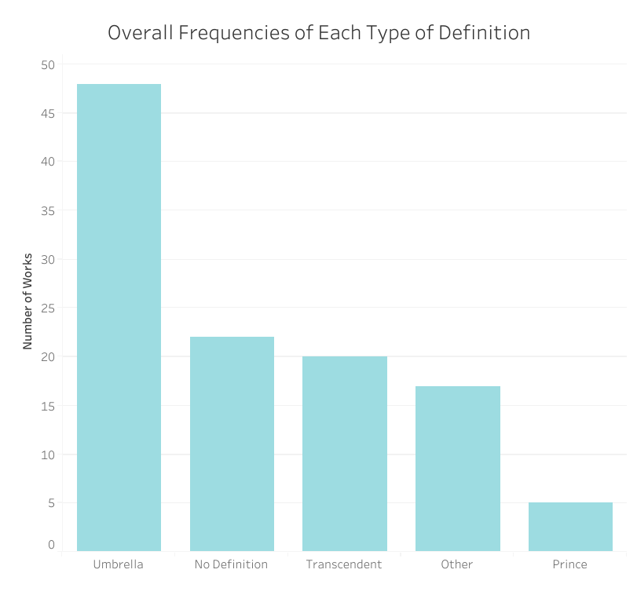
In addition, I broke the “other” category into the definition types in the graph shown below. These types were exclusive, and so each definition could only fall into one of these groups.
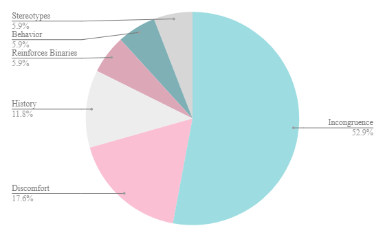
The most common “other” definition, was “incongruence” which includes definitions such as the one below.
“People who feel that their gender identity is different from their biological sex. Some transgender people wish to change their anatomy to be more congruent with their self-perception. Others do not have such a desire. There is no correlation between sexual orientation and transgender issues” (Smith 1995, 112).
This definition simply refers to a difference between sex/gender assigned at birth and gender identity. Other definitions focused specifically on the experience of discomfort or dysphoria, or on specific behaviors or the breaking of stereotypes that transgender people do. The final definition type is that transgender people actually reinforce gender binaries by playing into traditional gender roles and misunderstanding what it truly means to be a woman. The categories “stereotypes,” “behavior,” and “reinforces binary” were made up of only one definition each.
Definition Types by Year
Once all the definitions were coded by definition type, I examined the frequency that each was used per year. These frequencies can be seen in the following graph (click on it to get a clearer view). Reflecting the results from my preliminary text analysis, there is no clear pattern to show that these definitions are changing over time. This supports my previous findings; as far as I can tell, within the time period that I am exploring, the definition of the word “transgender” has not changed much, or at least not in any of the ways I have thought to look at.
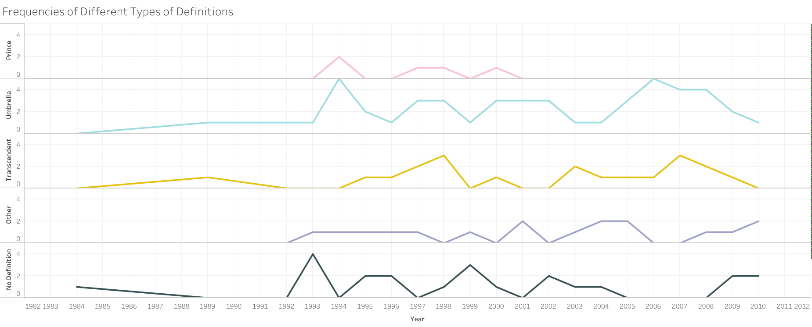
Differences Based on Topic
Since I didn’t find any patterns that showed the definition of “transgender” has changed over time, I decided to see if other factors were related to how this word was defined. Since I had already coded each definition according to the “topic” of the title of the piece, I decided to use this as one way of analyzing these definitions. Among the defined words, the most common topics were education, health & medicine, psychology, violence, and youth.
I ran the definitions through Voyant again, this time organized by topic. It should be noted that some articles had multiple topics, and so are included multiple times in this analysis. Other definitions, whose titles’ did not fall into any of these categories, were not included at all.
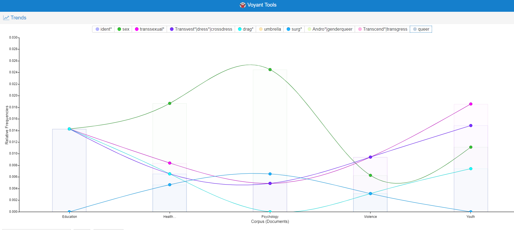
The image above shows part of this Voyant search (to better view the image, click on it and you will be brought to a larger image in a new tab). This image shows what I found to be interesting results. Specifically, the word "sex," which, in this context typically refers to biological or birth sex, was by far the most often used in the topic psychology, followed by Health & Medicine and was used less often in the categories Youth and Education. A similar pattern can be seen with the word "surg* (surgery/surgeries). On the other hand, the search terms “Transvest*|dress*|crossdress*” and “drag” showed the opposite pattern, and were more common in the topics of youth and education, as was the word "transsexual". These patterns did not seem to map onto the category relating to violence and discrimination.
The word "sex" implies talking about the biological and physical aspects of the body, and the word "surgery" relates, clearly, to medical changes to these bodies. Words like crossdress and drag, on the other hand, refer more to expressions of gender, particularly those focused on clothing.
Bringing this all together, it seems that in the contexts of psychology, and health & medicine, it is more common to talk about the physical and medicalized aspects of the transgender body. In the context of education and youth, on the other hand, it seems less common to discuss these ideas, and more common to discuss ideas related to gender expression and presentation. I am unsure what the pattern related to the word "transsexual" is representing.
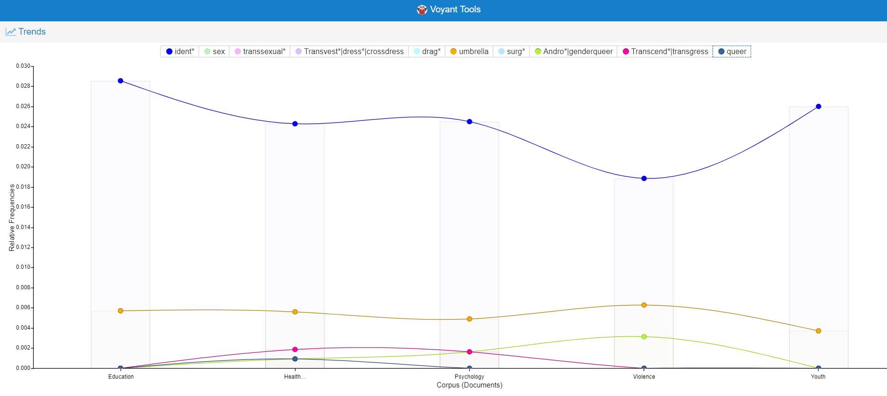
The remaining terms I examined, as shown above, were relatively consistent across these topics.
I also, as can be seen in the following graph, looked at whether or not certain definition types were more common in certain topics. These results are reported as relative to the total frequency of definitions for each topic, since some had many more definitions than others.
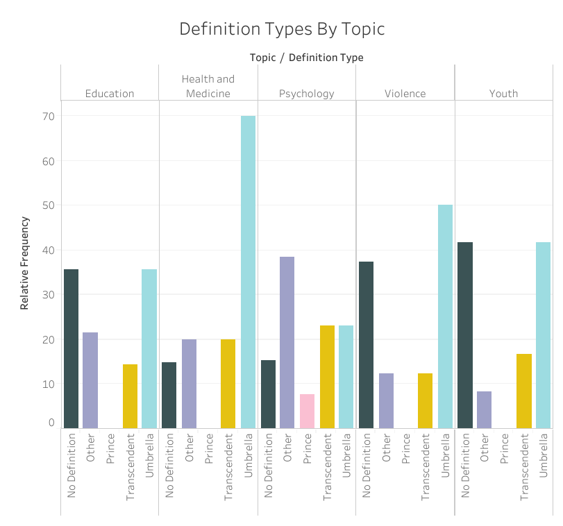
What immediately stood out to me about this graph was that the highest definition type in psychology was “other.” In addition, the category "other" was most frequent in psychology, and this was, in fact, the only topic where the category of "other" was more common than the definition "umbrella."
After some consideration, I realized that this supports my observations from the Voyant graphs. The most common “other” definition simply defines transgender as the incongruence between biological/birth sex and gender identity, and the second most common defines it as a sense of dysphoria and discomfort. These two definitions combined accounted for roughly 70% of those definitions in the "other" category. These definitions also seem related to the word "sex" (in order to refer to this incongruency, many definitions used referenced biological or birth sex), as well as to the idea of surgery, since dysphoria or discomfort with one's body is one of the most commonly discussed reasons why a trans* person might choose to undergo these procedures.
The topics health & medicine and psychology were the most likely to provide some definition of the word "transgender." This makes sense, in order to discuss an idea in a scientific context, it often needs to be operationally defined.
The final pattern I noticed is that the topic of “psychology” is the only one to have mentioned Prince’s definition. I am not quite sure what to make of this observation. Since the use of Prince’s definition is, overall, very low, this may be a coincidence.
Text Analysis and Close Readings by Source Type
In addition to exploring whether or not these definitions changed depending on the topic the article was about, I also wanted to explore if pieces from explicitly LGBT sources defined this word differently than those from other sources. To do so, I first looked at these definitions in Voyant, using the same key words as in the previous sections.
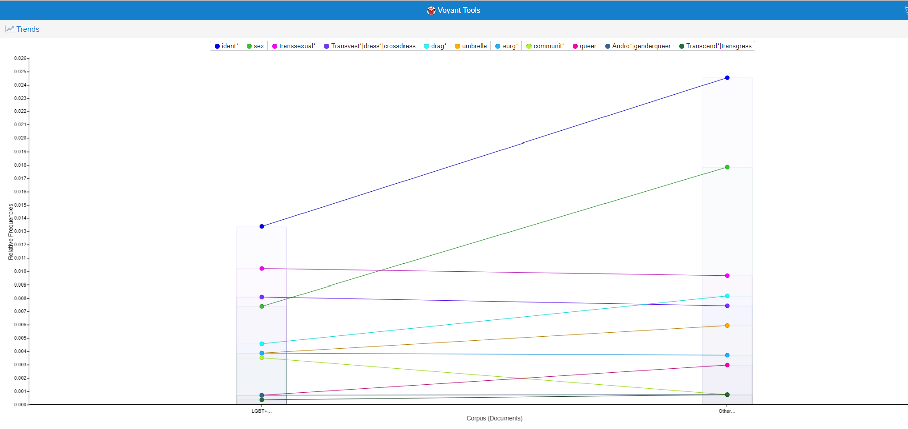
This showed some interesting differences. The word “identity” (and various versions of it) showed up more often in non-LGBT sources, as did the word “sex” and, to a lesser extent, “queer” and “drag.” I am not exactly sure what to make of these patterns. I would think that the difference in the word “sex” was for a similar reason as it being more common in psychology, with more articles focusing on sex/gender incongruence than presentation or behavior, but the higher usage of the word “drag” seems to contradicts this hypothesis. The fact that queer is more common in non-LGBT sources was surprising, since this is, in my experience, a term more often used by people who identify as queer than by those who do not because of its status as a reclaimed slur. I am similarly unsure on why non-LGBT sources discussed the idea of identity more often than LGBT sources. The only word that was more commonly discussed in LGBT sources was the word “community” (and various versions of it). This would make sense that sources dedicated to research or discussion of the LGBT community would have a greater focus on the concept of community itself. Overall, although some differences did show up in the frequencies of these words, I was not able to make sense of why these differences occurred.
I also looked at how the relative frequency of the definitions type changed depending on whether or not the source was explicitly LGBT. These relative frequencies can be seen in the following graph as can be seen in the following graph.
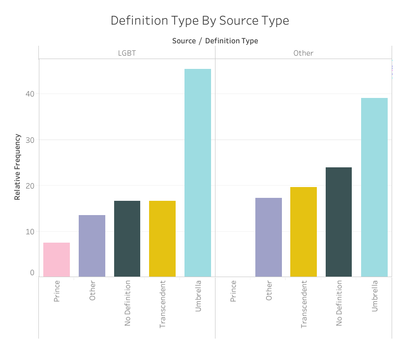
All of the discussions of Prince’s definition came from LGBT sources, which may imply that these sources were more likely to define the word "transgender" in historical context. It could also mean that they simply paid greater credence to Prince than other sources. Otherwise, the relative frequencies of these definitions were more-or-less the same across these two types of sources.
Overall
Through a combination of text analysis and close reading, I explored in what situations the word “transgender” was being defined differently. I found that, overall, the definition of the word did not really change over time, at least within the time period that I was able to look at. LGBT sources and non-LGBT sources defined this word in slightly, although not dramatically. different ways. There were some larger differences in the definitions of this word across different topics, specifically between the topics of “education,” “violence,” “health & medicine,” “psychology,” and “youth.”
Definitions
Below are all of the definitions I used for this project, in order of the date they were published. Note that these citations are based on the locations where I was able to access these sources. As such, some may come from a reprint rather than the source they were originally published in, and so the year in the citation might be different. If you’re interested in exploring these definitions yourself, download this file. which contains the definitions as well as metadata.
1984
Peo, Roger E. “The ‘Origins’ and ‘Cures’ for Transgender Behavior.” TV-TS Tapestry 42 (1984): 40–41.
No definition
1989
Bristow, Joseph. “Gay, Lesbian, Bisexual, Queer and Transgender Criticism.” In The Cambridge History of Literary Criticism, by George Alexander Kennedy and Raman Selden, 217–36. Cambridge University Press, 1989.
Transgender began to circulate widely to define individuals who expressed their desires through a broad - though not interchangeable - ensemble of gender-crossing and gender-effacing practices, including such different phenomena as androgyny, transsexuality and transvestism (pg. 220)
1992
Feinberg, Leslie. “Transgender Liberation: A Movement Whose Time Has Come.” In The Transgender Studies Reader, by Susan Stryker and Stephen Whittle, 205–20. New York: Routledge, 2002.
In recent years a community has begun to emerge that is sometimes referred to as the gender or transgender community. Within our community is a diverse group of people who define ourselves in many different ways (pg. 206).
1993
Blumenfeld, Warren J. “Making Colleges and Universities Safe for Gay, Lesbian, Bisexual and Transgender (GLBT) Students and Staff.” In The Governor’s Commission on Gay and Lesbian Youth. Boston, MA, 1993.
No Definition
Bilodeau, B. L. "Voices of Transgender Students." Riverside, CA. http://students673.ucr.edu/docsserver/lgbt/voices_of_transgender_students.pdf.
No Definition
Bornstein, Kate. “A Transgender Transsexual Post Modern Tiresias.” In The Last Sex: Feminism and Outlaw Bodies, 104–20. Montreal: New World Perspectives, 1993.
No Definition
Rothblatt, Martine Aliana. “Considering Transgender Liberation.” TV-TS Tapestry 64 (1993): 40–41.
Transgender Liberation makes clear that cross-dressing, cross-living, and cross-being are part of a once-respected tradition going back thousands of years...Transgender Liberation recounts our history/history of oppression. And transgenderists can draw strength from the persistence of our lifestyle (pg. 40).
Stone, Allucquere Rosanne. “What Vampires Know: Transsubjection and Transgender in Cyberspace.” Talk presented at the In Control: Mensch-Interface-Maschine., 1993. http://evolutionzone.mariuswatz.com/kulturezone/futurec/articles/stone.what-vampires-know.
No Definition
Stryker, Susan. Transgender Rage Against the Psychiatric Establishment, 1993. http://www.spunk.org/texts/pubs/cf/sp000562.txt.
Like many of you here today, transgendered individuals - we are transsexuals, transvestites, butch women, drag queens, who are physically intersexed or who embrace any behavior or identity that crosses over or moves between the dominant culture's notion of male and female (para. 1)
1994
Denny, Dallas. “You’re Strange and We’re Wonderful: The Relationship between the Gay/Lesbian and Transgendered Communities.” In Bound by Diversity, by James T. Sears, 47–53. Columbia, SC: Sebastian Press, 1994.
The transgender community is exceedingly diverse. It includes transsexuals who completely live as members of the other biological sex. Transsexuals submit their bodies to painful procedures such as surgery and electrolysis and take hormones as part of their process of self-invention. Transgenderists differ. While their commitment to physical change is perhaps less extreme, they identify predominantly and often entirely with the other biological sex. There are heterosexuals who dress up in the privacy of their homes or congregate with others like themselves at transgender conventions and gay bars as well as cross-dressers who identify as gay. Prostitutes, too, cross-dress both to please themselves and to make money. Within each of these categories are biological females and males. In short, it's impossible to separate gay, lesbian, and transgendered people into two distinct groups (pg. 48).
MacKenzie, Gordene O. Transgender Nation. Bowling Green State University Popular Press, 1994.
Another term I used throughout the book is transgenderist, coined by pioneer gender researcher and transgenderist Virginia Prince. I chose this term because it was self-generated, rather than medically applied. In that sense it can be a term of empowerment rather than disempowerment. Transgenderist as Prince originally intended designates an individual who lives full-time in the role of the "opposite" gender, without sex reassignment surgery. Recently, it has been suggested by members of the gender community that transgendersit be used to include transsexuals as a sub-category for legal purposes. Although this was clearly not Prince's original intent, the term has been widely adopted among members of the growing transgender community (pg. 2).
McKellar, Dee. “Success! 2nd Annual International Conference on Transgender Law and Employment Policy.” TV-TS Tapestry 66 (1994): 13.
The fact of genetic sex and gender role/ identity incongruence (pg. 13).
Raymond, Janice. “The Politics of Transgender.” Feminism & Psychology 4, no. 4 (November 1994): 628–33.
The term 'transgender' covers pre-operative and post-operative transsexuals, transvestites, drag queens, cross dressers, gays and lesbians, bisexuals and straights who exhibit any kind of dress and/or behavior interpreted as 'transgendering' gender roles. It's interesting that like transsexuals, the majority of transgenderists are men who, rather than transcending, i.e. dismantling and going beyond gender roles, seek to combine aspects of traditional femininity with aspects of traditional masculinity (pg. 629).
Schjelderup, Nina. Oral Histories of Black Gay Men and a Black Transgender Person in the San Francisco Bay Area, 1994.
Transgender is kind of like the whole spectrum, all the way from the cross dressers, to the people who occasionally dress, to the people like me who have had complete surgery, and everything in between (pg. 4).
Stark, Lori. “Exploration of Human and Social Service Needs of the Transgender Community: Guidelines for Social Workers.” Open Access Thesis, Augsburg College, 1994. https://idun.augsburg.edu/etd/130.
Transgendered individuals belong to a heterogeneous community, and, for the purposes of this study include transsexuals and crossdressers (pg. 2).
1995
Cook-Daniels, Loree. “Lesbian, Gay Male, Bisexual and Transgendered Elders: Elder Abuse and Neglect Issues.” Journal of Elder Abuse & Neglect 9, no. 2 (1998): 35–49. https://doi.org/10.1300/J084v09n02_04.
This term is a catch-all for all of the above and for people who feel they cross or blur gender lines are both female and male or neither. “Butch” Lesbians and “effeminate” gay men are sometimes included in this category (pg. 6).
Johnson, Mark. “Transgender Men and Homosexuality in the Southern Philippines: Ethnicity, Political Violence and the Protocols of Engendered Sexualities Amongst the Muslim Tausug and Sama.” South East Asia Research 3, no. 1 (1995): 46–66.
No Definition
Kreig, Flavia. “Just Say No to Involuntary Heterosexist Psychiatric Treatment - Toward Protecting the Mental Health of Gay, Lesbian, Bisexual, and Transgender Adolescents Notes and Comments.” Journal of Juvenile Law 16 (1995): 115–28.
No Definition
Shepard, Curtis F., Felice Yeskel, and Charles Outcalt. Lesbian, Gay, Bisexual, and Transgender Campus Organizing: A Comprehensive Manual, 1995. https://eric.ed.gov/?id=ED449723.
There is a range of people who identify as transgender: people who are transsexual, people who are into "gender-bending," drag queens, and so on. In short, many who do not fit within the rigid confines of our society's gender norms consider themselves transgender (pg. 18-19).
Smith, Jan. “Concerns of Gay, Lesbian, Bisexual, and Transgender Graduate Students.” New Directions for Student Services 72 (1995): 11–119.
People who feel that their gender identity is different from their biological sex. Some transgender people wish to change their anatomy to be more congruent with their self-perception. Others do not have such a desire. There is no correlation between sexual orientation and transgender issues (pg. 112).
1996
Beemyn, Brett, and Mickey Eliason. Queer Studies: A Lesbian, Gay, Bisexual, and Transgender Anthology. NYU Press, 1996.
No Definition
Feinberg, Leslie. Transgender Warriors: Making History from Joan of Arc to Dennis Rodman. Beacon Press, 1996.
I use it in the most inclusive sense: to refer to all courageous trans warriors of every sex and gender - those who led battles and rebellions throughout history and those who today muster the courage to battle for their identities and for their very lives (pg. XI).
Namaste, Ki. “‘Tragic Misreadings’: Queer Theory’s Erasure of Transgender Subjectivity.” In Queer Studies: A Lesbian, Gay, Bisexual, and Transgender Anthology, by Brett Beemyn and Mickey Eliason, 183–203. New York and London: New York University, 1996.
Transgenderist is a community term denoting kinship among those with gender-variant identities. It supplants the dichotomy of transsexual and transvestite with a concept of continuity (pg. 193).
Nataf, Zachary. “Lesbians Talk Transgender.” In The Transgender Studies Reader, by Susan Stryker and Stephen Whittle, 439–48. New York: Routledge, 2006.
No Definition
Parlee, Mary Brown. “Situated Knowledges of Personal Embodiment: Transgender Activists’ and Psychological Theorists’ Perspectives on ‘Sex’ and ‘Gender.’” Theory & Psychology 6, no. 4 (1996): 625–45.
Persons whose gendered embodiment is outside conventional gender/sex categories (pg. 631).
1997
Conner, Randy P., David Hatfield Sparks, and Mariya Sparks. Cassell’s Encyclopedia of Queer Myth, Symbol, and Spirit: Gay, Lesbian, Bisexual, and Transgender Lore. Weidenfeld & Nicolson, n.d.
The terms 'transgendered,' 'gender variant,' and 'third gender' are used to refer to gendered behaviors, identities, or roles which do not conform to a particular culture's conceptions of 'masculinity' or 'femininity,' which mix these conceptions in a fluid or relatively stable manner, which cross them in terms of traditional lines based on anatomical sex or which constitute a fairly stable gender role rooted neither in traditional 'masculinity' nor 'femininity.' 'Transgendered' behavior or identity may be manifested in behaviors characterized as 'tomboyish' or 'sissyish,' as well as in transvestism or 'drag,' and in transsexuality (pg. XII).
Ekins, Richard, and Dave King. “Blending Genders: Contributions to the Emerging Field of Transgender Studies.” International Journal of Transgenderism 1, no. 1 (July 1997).
It can refer to 'any kind of dress and/or behavior interpreted as "transgressing" gender roles.' It has been used more narrowly within the subculture as an umbrella term uniting transvestites and transsexuals as the transgender community. More narrowly still, it has been used to refer to those who live full-time in the 'opposite' gender but without surgery (para. 10).
Gagné, Patricia, Richard Tewksbury, and Deanna McGaughey. “Coming Out and Crossing Over: Identity Formation and Proclamation in a Transgender Community.” Gender & Society 11, no. 4 (August 1, 1997): 478–508. https://doi.org/10.1177/089124397011004006.
Transgenderism refers to 'the lives and experiences of diverse groups of people who live outside normative sex/gender relations'. Persons who enact alternative gender presentations or who have internalized alternative gender identities are referred to as 'transgenderists' (pg. 113).
Jeffreys, Sheila. “Transgender Activism: A Lesbian Feminist Perspective.” Journal of Lesbian Studies 1, no. 3/4 (September 1997): 55–74. https://doi.org/10.1300/J155v01n03_03.
In theory, as Janice Raymond defines it, transgender 'covers preoperative and postoperative transsexuals, transvestites, drag queens, cross dressers, gays and lesbians, bisexuals, and straights who exhibit any kind of dress and/or behavior interpreted as 'transgressing' gender roles.' Some transgender theorists include lesbians and gay men within the transgender phenomenon on the grounds that 'anyone who didn’t feel comfortable with hetero gender roles was a tranny.' In reality the public spokesmen tend to be postoperative transsexuals... Most have had the operation when they still believed they were going to become 'real' women then questioned this approach on discovering more progressive political theory on gender or when they realized they were not really 'women' at all. They therefore sought to create a third category for themselves which would enable them to take the political high ground and criticize feminists for their political conservatism (pg. 56-57).
Kreiss, J.l., and D.l. Patterson. “Psychosocial Issues in Primary Care of Lesbian, Gay, Bisexual, and Transgender Youth.” Journal of Pediatric Health Care 11, no. 6 (1997): 266.
Transgender persons identify as being members of the opposite of their biologic sex, as, for example, a man who feels that he is actually a woman trapped inside the body of a man. Most transgender persons are biologically male but have internalized a female identity (pg. 267).
1998
Bockting, Walter O., B. E. Robinson, and B. R. S. Rosser. “Transgender HIV Prevention: A Qualitative Needs Assessment.” AIDS Care 10, no. 4 (August 1998): 505–25. https://doi.org/10.1080/09540129850124028.
Transgender' is an umbrella term used to refer to a diverse group of individuals who cross or transcend culturally defined categories of gender. They include crossdressers or transvestites (those who desire to wear clothing associated with another sex), male-to-female and female-to-male transsexuals (those who desire or have undergone hormone therapy or sex reassignment surgery), transgenderists (those who live in the gender role associated with another sex without desiring sex reassignment surgery), bigender persons (those who identify as both man and woman), drag queens and kings (usually gay men and lesbian women who 'do drag' and dress up in, respectively, women's and men's clothes), and female and male impersonators (males who impersonate women and females who impersonate men) (pg. 505).
Boswell, Holly. “The Transgender Paradigm Shift Toward Free Expression.” In Current Concepts in Transgender Identity, by Dallas Denny, 55–61. Routledge, 2013.
The word 'transgender' describes much more than crossing between the poles of masculinity and femininity. It more aptly refers to the transgressing of gender norms or being freely gendered, or transcending gender altogether in order to become more fully human (pg. 56).
Gamson, Joshua. “Publicity Traps: Television Talk Shows and Lesbian, Gay, Bisexual, and Transgender Visibility.” Sexualities 1, no. 1 (1998): 11.
No Definition
Halberstam, Judith. “Transgender Butch: Butch/FTM Border Wars and the Masculine Continuum.” GLQ: A Journal of Lesbian and Gay Studies 4, no. 2 (April 1, 1998): 287–310. https://doi.org/10.1215/10642684-4-2-287.
Perhaps because these categories are so difficult to disentangle, a new category (which I have been using here) has emerged in recent years: 'transgender,' which describes a gender identity that is at least partially defined by gender transitivity but that might well stop short of transsexual surgery. Inevitably, it becomes a catchall term, and this somewhat lessens its effect (pg. 303).
Stryker, Susan. “The Transgender Issue: An Introduction.” GLQ: A Journal of Lesbian and Gay Studies 4, no. 2 (April 1, 1998): 145–58. https://doi.org/10.1215/10642684-4-2-145.
In this introduction, I use transgender not to refer to one particular identity or way of being embodied but rather as an umbrella term for a wide variety of bodily effects that disrupt or denaturalize heteronormatively constructed linkages between an individual’s anatomy at birth, a nonconsensually assigned gender category, psychical identifications with sexed body images and/or gendered subject positions, and the performance of specifically gendered social, sexual, or kinship functions. I realize that in doing so, and by including transsexuality (which I discuss in more detail below) within the transgender rubric, I am already taking a position in the debate about how these terms interrelate. As I deploy it here, transgender bears an intimate and in many ways polemically charged relationship to those versions of the term queer that equate it with making visible heteronormativity’s occluded structures and operations (pg. 149).
1999
Blackwood, Evelyn, and Saskia E. Wieringa. “Female Desires: Same-Sex Relations and Transgender Practices across Cultures.” Journal of the History of Sexuality 10, no. 1 (2001): 122.
...cross-gender behavior (more recently labeled transgender) (pg. 45).
Clements, Kristen, Willy Wilkinson, Kerrily Kitano, and Rani Marx. “HIV Prevention and Health Service Needs of the Transgender Community in San Francisco.” International Journal of Transgenderism 3, no. 1 (1999): 2–17.
No Definition
Irwin, Jude. The Pink Ceiling Is Too Low. New South Wales: Australian Centre of Lesbian and Gay Research, 1999.
No Definition
Kammerer, Nina, Theresa Mason, Margaret Connors, and Rebecca Durkee. “Transgender Health and Social Service Needs in the Context of HIV Risk.” International Journal of Transgenderism 3, no. 1 (1999): 39–57.
In this chapter, the noun "transgender" and the adjective "transgendered" are used broadly, encompassing individuals who self-identify as transsexual, whether preoperative, postoperative, or nonoperative, that is, not desirous of having sex reassignment surgery, and individuals who self-identify as transgender. Our research focused not on transvestites who cross-dress but on transgenders who cross-live (pg. 40).
Kulick, Don. “Transgender and Language: A Review of the Literature and Suggestions for the Future.” GLQ: A Journal of Lesbian and Gay Studies 5, no. 4 (October 1, 1999): 605–22. https://doi.org/10.1215/10642684-5-4-605.
I use transgender as an umbrella term that includes 'all people who cross-dress (pg. 620).
2000
Cahill, Sean, Ken South, and Jane Spade. Outing Age: Public Policy Issues Affecting Gay, Lesbian, Bisexual and Transgender Elders. Policy Institute of the National Gay and Lesbian Taskforce, 2000.
Transgender people include: pre-, post- and nonoperative transsexuals; cross-dressers; intersexed people (hermaphrodites); and 'men and women whose appearance or characteristics are perceived to be gender atypical (pg. 98).
Cole, Sandra S., Dallas Denny, A. Evan Eyler, and Sandra L. Samons. “Issues of Transgender.” In Psychological Perspectives on Human Sexuality, 149–95. Hoboken, NJ, US: John Wiley & Sons Inc, 2000.
...lives (full or part time) as a member of a gender that is incongruent with his or her anatomic sex, frequently with hormonal support (pg. 150).
Dean, Laura, Ilan H Meyer, Kevin Robinson, Randall L Sell, Robert Sember, Vincent M B Silenzio, Deborah J Bowen, et al. “Lesbian, Gay, Bisexual, and Transgender Health: Findings and Concerns.” Journal of the Gay and Lesbian Medical Association 4, no. 3 (2000): 101–51.
Transgendered individuals are those who live full- or part-time in the gender role opposite to the one in which they were born, or who display gender characteristics that are not typical of their assigned sex. Some categories of transgendered persons include transsexuals, crossdressers or transvestites, transgenderists, androgynes, intersexed persons, hermaphrodites, and drag kings and queens. As cultural definitions of gender and sex change and expand, additional categories of transgendered persons are likely to emerge. At present, the predominant gender vectors transgendered individuals take are either from female-to-male (FtM) or from male-to-female (MtF) (pg. 126).
Jordan, Karen M. “Substance Abuse Among Gay, Lesbian, Bisexual, Transgender, and Questioning Adolescents.” School Psychology Review 29, no. 2 (2000): 201.
No Definition
Xavier, Jessica. “The Washington Transgender Needs Assessment Survey.” Washington, DC: The Administration for HIV and AIDS of the District of Columbia Government, 2000.
The term 'transgender' itself is a purposefully vague umbrella term for a diverse group of gender variant identities that includes transgender itself, transgenderist, transsexuals, crossdressers (the preferred term in lieu of 'transvestite'), intersexed people (formerly, hermaphrodites), Doms (dominant lesbians), passing women, some (but not all) drag queens and drag kings, and many others. Gender Variant refers to those who cannot or choose not to conform to rigid cultural norms for their gender as based upon their physical sex. Transgendered people are usually visibly gender variant in the ways they express their gender, identify themselves and live their lives (pg. 9).
2001
Bochenek, Michael, and A. Widney Brown. Hatred in the Hallways : Violence and Discrimination Against Lesbian, Gay, Bisexual, and Transgender Students in U.S. Schools. Human Rights Watch, 2001.
One whose identity or behavior falls outside of stereotypical gender norms. This term is often shortened to "trans" (pg. XV).
Clements-Nolle, Kristen, Rani Marx, Robert Guzman, and Mitchell Katz. “HIV Prevalence, Risk Behaviors, Health Care Use, and Mental Health Status of Transgender Persons: Implications for Public Health Intervention.” American Journal of Public Health 91, no. 6 (2001): 915–21. https://doi.org/10.2105/AJPH.91.6.915.
Transgender is a term used to describe individuals who have a persistent and distressing discomfort with their assigned gender. Such individuals were born anatomically as one biological sex but live their lives to varying degrees as the opposite sex (pg 915).
Israel, Gianna E., and Donald E. Tarver. Transgender Care: Recommended Guidelines, Practical Information, and Personal Accounts. Temple University Press, 2001.
Transgender identity is a term used to describe a number of groups of people: transvestites, transgenderists, those with androgynous presentations, or the intersexed. Any such individual may self-identify or be described as being transgender or having a transgender identity (pg. 8).
Lombardi, Emilia. “Enhancing Transgender Health Care.” American Journal of Public Health 91, no. 6 (2001): 869–72. https://doi.org/10.2105/AJPH.91.6.869.
For the sake of uniformity within this commentary, however, the label transgender is used in a global sense, encompassing transvestites, transsexuals, and self-identified transgender individuals (pg. 869).
Meyer, Ilan H. “Why Lesbian, Gay, Bisexual, and Transgender Public Health?” American Journal of Public Health 91, no. 6 (2001): 856–59.
Transgender' refers to such a variety of individuals, from intersexed newborns to heterosexually identified transvestite men, that any discussion of transgender people as a group would distort the group's diversity (pg. 856).
2002
Boehmer, Ulrike. “Twenty Years of Public Health Research: Inclusion of Lesbian, Gay, Bisexual, and Transgender Populations.” American Journal of Public Health 92, no. 7 (July 2002): 1125–30. https://doi.org/10.2105/AJPH.92.7.1125.
the definition of transgender identity is evolving. Over the years, different terms have been used; therefore, abstracts that mentioned transsexuals, transvestites, crossdressers, or hermaphrodites were coded as 'transgender' (pg. 1126).
Cochran, Bryan N., Angela J. Stewart, Joshua A. Ginzler, and Ana Mari Cauce. “Challenges Faced by Homeless Sexual Minorities: Comparison of Gay, Lesbian, Bisexual, and Transgender Homeless Adolescents with Their Heterosexual Counterparts.” American Journal of Public Health 92, no. 5 (May 2002): 773–77. https://doi.org/10.2105/AJPH.92.5.773.
No Definition
Hughes, Tonda L., and Michele Eliason. “Substance Use and Abuse in Lesbian, Gay, Bisexual and Transgender Populations.” Journal of Primary Prevention 22, no. 3 (March 1, 2002): 263–98. https://doi.org/10.1023/A:1013669705086.
The term 'transgender' refers to people who do not fit societal expectations for sex (male/female) or masculine/feminine gender role. This term is often confusing because it encompasses many different identity expressions. These include, but are not limited to, heterosexual cross-dressers, gay drag performers, people who live full time as the opposite sex (whether or not they desire or can afford hormonal and/or surgical treatments),and those who live variously adopting male and female gender roles (pg 266).
Lombardi, Emilia, Riki Anne Wilchins, Dana Priesing, and Diana Malouf. “Gender Violence: Transgender Experiences with Violence and Discrimination.” Journal of Homosexuality 42, no. 1 (2001): 89–101.
Transgendered people (trans-people) are people who do not follow traditional gender norms. They include intersexed persons, transsexuals, cross-dressers/transvestites, and others who in one way or another do not conform to traditional gender norms (pg. 90).
Munoz-Plaza, Corrine, Sandra C. Quinn, and Kathleen A Rounds. “Lesbian, Gay, Bisexual and Transgender Students: Perceived Social Support in the High School Environment,” no. 4 (2002): 52. https://doi.org/10.1353/hsj.2002.0011.
No Definition
2003
Beemyn, Brett. “Serving the Needs of Transgender College Students.” Journal of Gay & Lesbian Issues in Education 1, no. 1 (2003): 33–50.
As it is commonly used today, 'transgender' is an umbrella term for anyone whose self-identification or expression crosses or transgresses established gender categories, including, but not limited to, transsexuals (individuals who identify with a gender different from their biological gender), cross dressers (the term preferred to “transvestites”), drag kings and drag queens (pg. 36).
Griffin, Pat, and Mathew Ouellett. “From Silence to Safety and Beyond: Historical Trends in Addressing Lesbian, Gay, Bisexual, Transgender Issues in K-12 Schools.” Equity & Excellence in Education 36, no. 2 (June 1, 2003): 106–14.
Transgender refers to gender identities and gender expressions that do not conform to normative binary gender expectations for men and women (pg. 112).
Heyes, Cressida J. “Feminist Solidarity after Queer Theory: The Case of Transgender.” Signs 28, no. 4 (2003): 1093–1120. https://doi.org/10.1086/343132.
I use transgendered to describe anyone who lives a gender they were not perinatally assigned or that is not publicly recognizable within Western cultures’ binary gender systems (pg. 1093).
Mathy, Robin M. “Transgender Identity and Suicidality in a Nonclinical Sample.” Journal of Psychology & Human Sexuality 14, no. 4 (July 10, 2003): 47–65.
https://doi.org/10.1300/J056v14n04_03.
One “who lives (full or part time) as a member of a gender that is incongruent with his or her anatomic sex, frequently with hormonal support” (pg. 49).
Ryan, Kaitlyn, and Ian Rivers. “Lesbian, Gay, Bisexual and Transgender Youth: Victimization and Its Correlates in the USA and UK.” Culture, Health & Sexuality 5, no. 2 (2003): 103–19.
No Definition
2004
Brown, Robert Donald, Brandy Clarke, Valerie Gortmaker, and Rachael Robinson-Keilig. “Assessing the Campus Climate for Gay, Lesbian, Bisexual, and Transgender (GLBT) Students Using a Multiple Perspectives Approach.” Journal of College Student Development 45, no. 1 (March 5, 2004): 8–26. https://doi.org/10.1353/csd.2004.0003.
No Definition
Kosciw, Joseph G. The 2003 National School Climate Survey. The School-Related Experiences of Our Nation’s Lesbian, Gay, Bisexual and Transgender Youth. Gay, Lesbian and Straight Education Network, 121 W, 2004. https://eric.ed.gov/?id=ED486412.
Transgender' is used to describe a wide range of identities and experiences including transsexual individuals, cross-dressers, intersexed individuals and individuals, regardless of sexual orientation, whose appearance or characteristics are perceived to be gender atypical (pg. 1).
Nemoto, Tooru, Don Operario, JoAnne Keatley, Lei Han, and Toho Soma. “HIV Risk Behaviors Among Male-to-Female Transgender Persons of Color in San Francisco.” American Journal of Public Health 94, no. 7 (July 2004): 1193–99. https://doi.org/10.2105/AJPH.94.7.1193.
Male-to-female (MTF) transgender persons are individuals who experience discomfort with their biological male gender and identify instead as women (pg. 1193).
Sinnott, Megan. Toms and Dees: Transgender Identity and Female Same-Sex Relationships in Thailand. Southeast Asia--Politics, Meaning, Memory. Honolulu: University of Hawaii Press, 2004.
Terms like 'transgender' and 'cross-gender' imply the mixing or crossing over of two reified attributes—masculinity and femininity. These terms assume that a coherent gender exists and is transcended, rather than reflect the process whereby nodes of masculinity and femininity are created and consequently contested, manipulated, and transformed. The idea that masculinity and femininity are self-evident entities (albeit culturally varied) that can be blended, leading to a third gender, reinforces the essentialist binaries that contemporary theorists are trying to deconstruct (pg. 39).
Stryker, Susan. “Transgender Studies: Queer Theory’s Evil Twin.” GLQ: A Journal of Lesbian and Gay Studies 10, no. 2 (April 7, 2004): 212–15.
Feinberg took a preexisting term, transgender, and invested it with new meaning, enabling it to become the name for Stone’s theorized posttranssexualism (pg. 212).
2005
Beemyn, Brett Genny. “Making Campuses More Inclusive of Transgender Students.” Journal of Gay & Lesbian Issues in Education 3, no. 1 (January 1, 2005): 77–87.
transgender - as transsexuals, cross-dressers, genderqueers, gender benders, androgynous, and a host of other gender-variant identities (pg. 78).
Beemyn, Brett Genny, Billy Curtis, Masen Davis, and Nancy J. Tubbs. “Transgender Issues on College Campuses.” New Directions for Student Services 111 (2005): 49–60.
The term transgender encompasses a wide range of identities, appearances, and behaviors that blur or cross gender lines. Within this transgender umbrella are transsexuals, who live some or all of the time in a sex different from their biological sex; cross-dressers (formerly called transvestites), who wear clothes typically associated with the 'opposite' gender; drag kings and drag queens, who cross-dress within a performance context; and genderqueers, who identify outside of binary gender or sex systems (pg. 49).
Kenagy, Gretchen P. “Transgender Health: Findings from Two Needs Assessment Studies in Philadelphia.” Health & Social Work 30, no. 1 (February 1, 2005): 19–26. https://doi.org/10.1093/hsw/30.1.19.
The term 'transgender' is used as an umbrella term to describe people who '…have gender identities, expressions, or behaviors not traditionally associated with their birth sex' (pg. 19).
Kenagy, Gretchen P., and Wendy B. Bostwick. “Health and Social Service Needs of Transgender People in Chicago.” International Journal of Transgenderism 8, no. 2–3 (2005): 57–66. https://doi.org/10.1300/J485v08n02_06.
According to one definition, being transgendered is the recognition of conflict between gender at birth and present gender identity. According to this definition, do you consider yourself to be transgendered? (pg. 58)
McKinney, Jeffrey S. “On the Margins: A Study of the Experiences of Transgender College Students.” Journal of Gay & Lesbian Issues in Education 3, no. 1 (January 1, 2005): 63–76.
At an early age, these students typically feel that they do not fit into the sex assigned to them at birth. They may question whether they are male, female, or something else, and may feel uneasy in their bodies (pg. 64).
2006
Clements-Nolle, Kristen, Rani Marx, and Mitchell Katz. “Attempted Suicide Among Transgender Persons: The Influence of Gender-Based Discrimination and Victimization.” Journal of Homosexuality 51, no. 3 (November 2006): 53–69.
https://doi.org/10.1300/J082v51n03_04.
Transgender is an umbrella term used to describe individuals who do not conform to the societal gender norms associated with their physical sex. To be inclusive of transgender identities, we interviewed individuals who stated that their primary gender was transgender, the opposite gender from that observed at birth, transsexual, bigender, transvestite, cross-dresser, or intersexed (pg. 56).
Garofalo, Robert, Joanne Deleon, Elizabeth Osmer, Mary Doll, and Gary W. Harper. “Overlooked, Misunderstood and At-Risk: Exploring the Lives and HIV Risk of Ethnic Minority Male-to-Female Transgender Youth.” Journal of Adolescent Health 38, no. 3 (March 1, 2006): 230–36. https://doi.org/10.1016/j.jadohealth.2005.03.023.
Transgender refers to a range of individuals with atypical gender characteristics or gender identities discordant from their anatomic sex, including transsexuals, cross dressers, and androgynists (pg. 230).
Grossman, Arnold H, and Anthony R. D’augelli. “Transgender Youth: Invisible and Vulnerable.” Journal of Homosexuality 51, no. 1 (September 25, 2006): 111–28. https://doi.org/10.1300/J082v51n01_06.
Transgender is a term used to describe individuals who exhibit gender-nonconforming identities and behaviors, or in other words, those who transcend typical gender paradigms. This broad category of people includes transsexuals (i.e., those who have made the transition to living in the gender other than the one originally assigned to them), cross-dressers (e.g., transvestites, drag queens, drag kings), and gender benders/blenders (i.e., those who purposefully present an ambiguous gender expression) (pg. 112).
Newfield, Emily, Stacey Hart, Suzanne Dibble, and Lori Kohler. “Female-to-Male Transgender Quality of Life.” Quality of Life Research 15, no. 9 (November 1, 2006): 1447–57. https://doi.org/10.1007/s11136-006-0002-3.
Transgender is an umbrella term used to incorporate people of various gender identifications, including transsexuals, drag queens and drag kings, masculine women, feminine men, and others who violate normative gender laws but who do not necessarily seek and/or obtain surgical and medical treatment (pg. 1447).
Stryker, Susan, and Stephen Whittle. The Transgender Studies Reader. New York: Routledge, 2006.
The word 'transgender' itself which seems to have been coined in the 1980s, took on its current meaning in 1992 after appearing in the title of a small but influential pamphlet by Leslie Feinberg ... transgender came to mean something else entirely - an adjective rather than a noun. Feinberg called for a political alliance between all individuals who were marginalized or oppressed due to their difference from social norms of gendered embodiment, and who should therefore band together in a struggle for social, political, and economic justice. Transgender, in this sense, was a 'pangender' umbrella term for an imagined community encompassing transsexuals, drag queens, butches, hermaphrodites, cross-dressers, masculine women, effeminate men, sissies tomboys, and anyone else willing to be interpolated by the term who felt compelled to answer the call to mobilization (pg. 4).
2007
Fassinger, Ruth E., and Julie R. Arseneau. “‘I’d Rather Get Wet Than Be Under That Umbrella’: Differentiating the Experiences and Identities of Lesbian, Gay, Bisexual, and Transgender People.” In Handbook of Counseling and Psychotherapy with Lesbian, Gay, Bisexual, and Transgender Clients, 2nd ed., 19–49. Washington, DC, US: American Psychological Association, 2007. https://doi.org/10.1037/11482-001.
Transgender People - Individuals who are gender-variant or gender- "transgressive," that is, expressing their gender in ways not considered socially "appropriate" based on their (perceived) biological sex; also referred to as "gender-bending/blending," gender transgression can range from matters of dress and mannerisms to hormone treatments and reconstructive surgery aimed at changing one's genitalia or secondary sex characteristics to fit one's own sense of one's gender (pg. 22).
Grossman, Arnold H., and Anthony R. D’Augelli. “Transgender Youth and Life-Threatening Behaviors.” Suicide and Life-Threatening Behavior 37, no. 5 (2007): 527–37. https://doi.org/10.1521/suli.2007.37.5.527.
Transgender is an umbrella term used to describe people whose self-identification or expression transgresses established gender categories or boundaries. People who identify as transgender or 'trans' live all or a substantial portion of their lives expressing or presenting a gender identity (i.e. an internal sense of gender) that is other than their birth sex. The term transgender is inclusive of individuals who identify as transsexuals (i.e. identify with a gender different from their birth sex), cross-dressers (i.e., wear clothes usually associated with a gender other than their birth sex), and gender blenders (i.e. present ambiguous gender expressions). Transgender communities include a variety of individuals who regularly transgress conventional gender norms and role expectations (pg. 528).
Hines, Sally. TransForming Gender: Transgender Practices of Identity, Intimacy and Care. Policy Press, 2007.
The term transgender relates to a diversity of practices that call into question traditional ways of seeing gender and its relationship with sex and sexuality. Used broadly, the concept of transgender is extensive – incorporating practices and identities such as transvestism, transsexuality, intersex, gender queer, female and male drag, cross-dressing and some butch/femme practices. Transgender may refer to individuals who have undergone hormone treatment or surgery to reconstruct their bodies, or to those who cross gender in ways that are less permanent. Transgender has also been referred to as ‘gender blending’, ‘gender mixing’, ‘gender fucking’ and ‘gender crossing’. In this book ‘transgender’ is used as an umbrella term to cover a diversity of practices that involve embodied movements across, between, or beyond the binary categories of male and female. My use of the term ‘transgender’ thus relates to transsexual identities and practices, and those that are articulated from a variety of other (trans) gender positions (pg. 1).
Ray, Nicholas, and Colby Berger. Lesbian, Gay, Bisexual and Transgender Youth: An Epidemic of Homelessness. National Gay and Lesbian Task Force Policy Institute, 2007.
Transgender (trans): An umbrella term for people whose gender identity, expression or behavior is different from those typically associated with their assigned sex at birth, including but not limited to transsexuals, cross-dressers, androgynous people, genderqueers and gender nonconforming people. Transgender is a broad term and is good for providers to use (pg. 133).
Valentine, David. Imagining Transgender: An Ethnography of a Category. Duke University Press, 2007.
the category transgender has come to be understood as a collective category of identity which incorporates a diverse array of male- and female- bodied gender variant people who had previously been understood as distinct kinds of persons, including self-identified transsexuals and transvestites but also many others (pg. 4).
2008
Herbst, Jeffrey H., Elizabeth D. Jacobs, Teresa J. Finlayson, Vel S. McKleroy, Mary Spink Neumann, and Nicole Crepaz. “Estimating HIV Prevalence and Risk Behaviors of Transgender Persons in the United States: A Systematic Review.” AIDS and Behavior 12, no. 1 (January 1, 2008): 1–17. https://doi.org/10.1007/s10461-007-9299-3.
The term 'transgender' is an umbrella term that includes persons whose gender identity, expression, or behavior does not conform to societal gender norms associated with sex at birth. Transgender people experience a gender identity that is different than their anatomic sex; they may seek to alter their physical appearance by undergoing cosmetic procedures, using hormones, or having sex reassignment surgery. Other persons do not choose a physical transition, but rather express their gender identity through varied presentations and behaviors. Different labels have been used to describe gender-variant persons, including MTF, FTM, transsexual, cross-dresser, transvestite, drag queen/king, gender queer, and others (pg. 2).
Makadon, Harvey J., Kenneth H. Mayer, Jennifer Potter, and Hilary Goldhammer. The Fenway Guide to Lesbian, Gay, Bisexual, and Transgender Health. ACP Press, 2008.
Transgender people are individuals who transgress socially constructed gender norms in one manner or another. However, the language in the field is still evolving: the term 'transgender' is used in so many ways that it is not possible to define precisely. Some use the word 'transgender' as an umbrella term to refer to people whose feelings or behaviors do not match their assigned gender: examples include 'cross-dressers' and people who identify as 'MTF' (male-to-female) or "FTM" (female-to-male). Others use the word to describe a gender outside the constructs of male/female, to describe the experience of having no gender or multiple genders: examples include people who define themselves as 'genderqueer,' 'androgyne,' 'gender bender,' 'beyond binary,' and 'polygender' (pg. 333).
Operario, Don, Toho Soma, and Kristen Underhill. “Sex Work and HIV Status Among Transgender Women: Systematic Review and Meta-Analysis.” JAIDS Journal of Acquired Immune Deficiency Syndromes 48, no. 1 (May 1, 2008): 97. https://doi.org/10.1097/QAI.0b013e31816e3971.
Transgender women are individuals classified as male at birth but who identify as female (pg. 97).
Stryker, Susan. Transgender History. Seal Press, 2008.
I use it in this book to refer to people who move away from the gender they were assigned at birth people who cross over (trans-) the boundaries constructed by their culture to define and contain that gender. Some people move away from their birth-assigned gender because they feel strongly that they properly belong to another gender in which it would be better for them to live; others want to strike out toward some new location some space not yet clearly defined or concretely occupied; still others simply feel the need to get away from the conventional expectations bound up with gender that was initially put upon them. In any case, it is the movement across a socially imposed boundary away from an unchosen starting place - rather than any particular destination or mode of transition - that best characterizes the concept of 'transgender' that I want to develop here (pg. 1).
Stryker, Susan. “Transgender History, Homonormativity, and Disciplinarity.” Radical History Review 2008, no. 100 (January 1, 2008): 145–57. https://doi.org/10.1215/01636545-2007-026.
transgender was beginning to refer to something else — an imagined political alliance of all possible forms of gender antinormativity. It was in this latter sense that transgender became articulated with queer (pg. 146).
2009
Bauer, Greta R., Rebecca Hammond, Robb Travers, Matthias Kaay, Karin M. Hohenadel, and Michelle Boyce. “‘I Don’t Think This Is Theoretical; This Is Our Lives’: How Erasure Impacts Health Care for Transgender People.” Journal of the Association of Nurses in AIDS Care, Transgender Health and HIV Care, 20, no. 5 (September 1, 2009): 348–61. https://doi.org/10.1016/j.jana.2009.07.004.
No Definition
Kosciw, Joseph G., Emily A. Greytak, and Elizabeth M. Diaz. “Who, What, Where, When, and Why: Demographic and Ecological Factors Contributing to Hostile School Climate for Lesbian, Gay, Bisexual, and Transgender Youth.” Journal of Youth and Adolescence 38, no. 7 (August 1, 2009): 976–88. https://doi.org/10.1007/s10964-009-9412-1.
No Definition
Schilt, Kristen, and Laurel Westbrook. “Doing Gender, Doing Heteronormativity: ‘Gender Normals,’ Transgender People, and the Social Maintenance of Heterosexuality.” Gender & Society 23, no. 4 (August 1, 2009): 440–64. https://doi.org/10.1177/0891243209340034.
Transgender people—people who live with a social gender identity that differs from the gender they were assigned at birth (pg. 443).
Stotzer, Rebecca L. “Violence Against Transgender People: A Review of United States Data.” Aggression and Violent Behavior 14, no. 3 (May 1, 2009): 170–79. https://doi.org/10.1016/j.avb.2009.01.006.
Although definitions of the term transgender itself are contested, ‘transgender’ is coming to represent an umbrella term under which resides anyone who bends the common societal constructions of gender, including cross-dressers, transsexuals, genderqueer youth, drag queens, and a host of other terms that people use to self identify their gender. This term is “gender neutral” in the sense that it includes both people born as males who express or identify their gender as female (male-to-female transgender, or MTFs), and people born female who express or identify their gender as male (female-to-male, or FTMs) (pg. 171).
Stryker, Susan. “My Words to Victor Frankenstein Above the Village of Chamounix: Performing Transgender Rage.” Kvinder, Køn & Forskning 3, no. 4 (2009): 83–96.
That is, I use it here as an umbrella term that refers to all identities or practices that cross over, cut across, move between, or otherwise queer socially constructed sex/gender boundaries. The term includes, but is not limited to, transsexuality, heterosexual transvestism, gay drag, butch lesbianism, and such non-European identities as the Native American berdache or the Indian Hijra. Like 'queer,' 'transgender' may also be used as a verb or an adjective (pg. 94).
2010
Biblarz, Timothy J. “Lesbian, Gay, Bisexual, and Transgender Families.” Journal of Marriage and Family 73, no. 3 (2010): 480–97.
No Definition
Haas, Ann P, Mickey Eliason, Vickie M. Mays, Robin M. Mathy, Susan D. Cochran PhD Cochran, Anthony R. D’Augelli, Morton M. Silverman, et al. “Suicide and Suicide Risk in Lesbian, Gay, Bisexual, and Transgender Populations: Review and Recommendations.” Journal of Homosexuality 58, no. 1 (December 30, 2010): 10–51. https://doi.org/10.1080/00918369.2011.534038.
Transgender is an umbrella term that is broadly used to describe people with gender identities, expressions or behaviors which differ from their biological sex at birth. Although the term transgender is sometimes used synonymously with transsexual, the latter more commonly describes a subset of transgender individuals who undergo gender reassignment surgery and/or hormone treatment to align physical sex and gender identity. For varying reasons that include cost and lack of access to appropriate health care services, an unknown proportion of transgender people do not elect to obtain surgery or hormonal therapies. Terms such as “genderqueer” are increasingly used by younger transgender people, as well as some who do not identify as transgender, to describe a wide range of gender identifications, behaviors and expressions other than exclusively male or female (pg. 14).
Mustanski, Brian S., Robert Garofalo, and Erin M. Emerson. “Mental Health Disorders, Psychological Distress, and Suicidality in a Diverse Sample of Lesbian, Gay, Bisexual, and Transgender Youths.” American Journal of Public Health 100, no. 12 (December 1, 2010): 2426–32. https://doi.org/10.2105/AJPH.2009.178319.
expressing or identifying with a gender different from the one assigned at birth (pg. 2427).
Nuttbrock, Larry, Sel Hwahng, Walter Bockting, Andrew Rosenblum, Mona Mason, and Becker Jeffrey. “Psychiatric Impact of Gender-Related Abuse Across the Life Course of Male-to-Female Transgender Persons: The Journal of Sex Research: Vol 47, No 1,” 2010. https://www.tandfonline.com/doi/abs/10.1080/00224490903062258.
Transgenderism is a rare phenomenon that may be described as an incongruence between biological or anatomical sex and gender identity. Male-to-female (MTF) transgender persons, the focus of this study, are born with male genitalia and medically assigned as 'male' at birth but subsequently develop a sense of themselves as 'female,' or at least partially female, in certain situations or roles. A small but probably increasing percentage of these individuals undergo sexual reassignment surgery in an attempt to render their sexual characteristics and gender identity more compatible (pg. 12).
Salamon, Gayle. Assuming a Body: Transgender and Rhetorics of Materiality. Columbia University Press, 2010.
No Definition